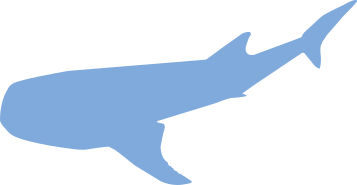
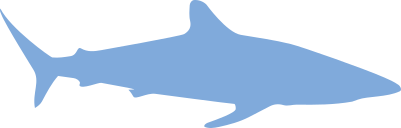
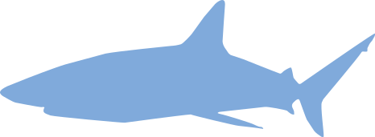
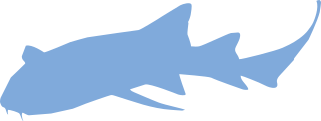
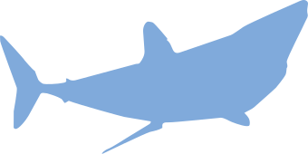
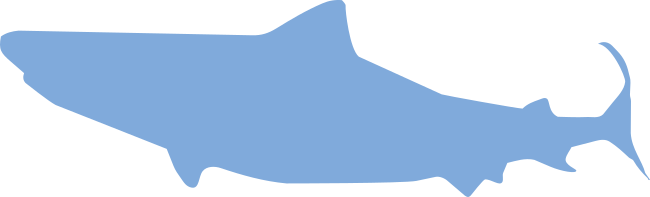
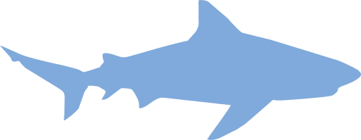
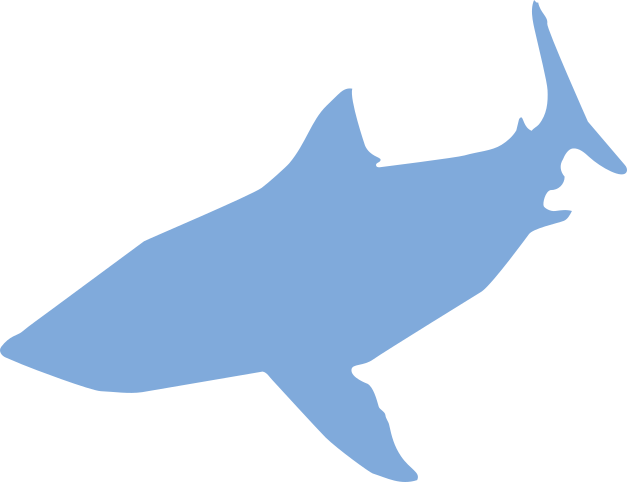
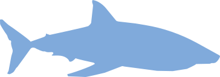

11. TIBURÓN BALLENA Rhincodon typus
El gigante bueno. Su tamaño enorme no es un peligro. Casi nunca es una amenaza.

10. TIBURÓN LIMÓN Negaprion brevirostris
Anda en grupo. Si se juntan es para cazar. Un grupo de tiburones es una pandilla.
9. TIBURÓN SEDOSO Carcharhinus falciformis
Un tiburón grande más. Todos los tiburones grandes son igual de peligrosos. Acercarse a uno termina en ataque.

8. TIBURÓN DE ARRECIFE DEL CARIBE Carcharhinus perezi
Nunca está solo. Estar rodeado de tiburones es estar a punto de ser atacado. Darles de comer desata un frenesí.

7. TIBURÓN NODRIZA GRIS Carcharias taurus
Da miedo por los dientes. Su cara significa que es agresivo. Hay que matarlo para proteger las playas.

6. TIBURÓN MARTILLO Sphyrnidae
El raro del mar. Su forma extraña lo hace más peligroso. Su cabeza es un arma.
5. TIBURÓN MAKO Isurus oxyrinchus
El más rápido. Su velocidad lo convierte en un cazador perfecto. Es tan inteligente que puede planear un ataque.

4. TIBURÓN TIGRE Galeocerdo cuvier
Come de todo. Es el basurero del océano. No distingue entre comida y humanos.

3. TIBURÓN TORO Carcharhinus leucas
El más agresivo. Es impredecible. Puede aparecer donde sea porque entra en agua dulce.

2. MEGALODÓN Otodus megalodon
El monstruo. Sigue vivo en el fondo del mar. Es imposible matarlo.

1. TIBURÓN BLANCO Carcharodon carcharias
El comehombres. Si te encuentra, no deja de perseguirte. La única solución es matarlo.
